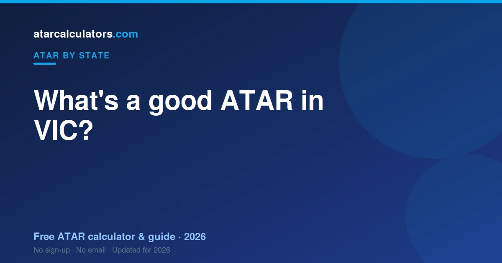
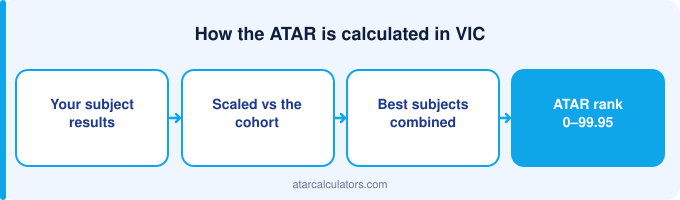

A good ATAR in VIC depends on the course you want, but the median ATAR is around 70. An ATAR of 80 or above sits comfortably above average and opens most courses at the University of Melbourne, Monash and other Victorian universities. An ATAR of 90 or above is competitive for in-demand degrees.
Key takeaways
- The median ATAR is around 70, so 70 is genuinely middle of the pack.
- An ATAR of 80+ sits well above average and opens most Victorian courses.
- An ATAR of 90+ is competitive for in-demand degrees.
- A “good” ATAR is really the one that gets you into your course.
- The ATAR is a rank, so it depends on how everyone else did.
- Adjustment factors and pathways can lower the ATAR you actually need.

Why a good ATAR depends on your goal
Your ATAR is a rank, not a mark. In Victoria it is built from your Primary Four study scores counted in full, plus 10% of your fifth and sixth — an aggregate near 210.
What is the average ATAR in VIC?
Victoria-specific average ATARs are not published as clean official figures. The ATAR is a percentile by construction, so the middle of the range is the middle by definition.
What each ATAR band opens in VIC
Do not confuse a study score with your ATAR. A study score is out of 50 within one study; your ATAR is a rank built after VTAC scales your aggregate. Different numbers, different scales.
Is an ATAR of 80 good in VIC?
An ATAR of 80 in Victoria means you outrank roughly four in five of your cohort. Whether that is good depends only on what your course requires.
Match your ATAR to a course
Rather than chasing a round number, work backwards from the course you want. Look up its cutoff, then aim a little above it to be safe.
Many Victorian degrees sit in the 70s. Competitive courses need 90 or more. See the full picture in VIC ATAR cutoffs.
Adjustment factors can lower what you need
The ATAR you need is not always the raw cutoff. Many Victorian universities add adjustment factors to your rank for things like your location, subjects, or difficulty during Year 12.
These lift your selection rank above your ATAR for that course. If your ATAR is close to a cutoff, they can make the difference. See how selection rank works.
Estimate your VIC ATAR
The best way to set a realistic goal is to see where your current results land. Our VIC ATAR calculator estimates your ATAR from your study scores, using the latest official scaling.
Compare that estimate with your course cutoff, and you have a clear, concrete target for the rest of the year.
A good ATAR for VIC universities
Victorian universities publish their clearly-in ranks each year. They move with demand rather than with any fixed standard — a clearly-in is a description, not a promise.
What each ATAR band means in the age group
Victoria has no band system — study scores are out of 50, with 30 near the middle. VTAC scales those before they reach your aggregate.
Good ATAR versus guaranteed entry
Some Victorian universities publish guaranteed ranks. These are commitments rather than descriptions of last year’s demand, which makes them more useful for planning.
Does your ATAR matter after university?
Your ATAR stops mattering once you are enrolled. Victorian employers ask about your degree, and universities ask about your WAM.
Setting a realistic VIC target
Set your Victorian target from your course, then work back through the Primary Four. Your fifth and sixth studies contribute only 10% each — they cannot rescue the top four.
A good ATAR is personal
A good personal ATAR in Victoria is one that reaches your course. Because only four studies count in full, defending those four is the whole game.
If your ATAR is lower than you hoped
A lower ATAR in Victoria is not the end. TAFE and diploma pathways feed into Victorian universities, and your Primary Four stops mattering the moment you are enrolled.
Common questions
What is the average ATAR in VIC?
Among students who receive an ATAR, the median is around 70. Because some Year 12 students take paths that do not produce an ATAR, 70 represents the middle of the university-bound group.
Is an ATAR of 80 good in VIC?
Yes. An ATAR of 80 puts you in roughly the top 20% and opens most courses at Victorian universities. It sits well above the median and is a strong, competitive result.
What ATAR puts me in the top 20%?
An ATAR of 80.00 means you finished ahead of about 80% of your age group, which places you in the top 20%. An ATAR of 90 places you in the top 10%.
Why is the median ATAR around 70?
Because not everyone in Year 12 receives an ATAR. Some students take vocational paths that do not produce one, so the median of those who do get an ATAR sits around 70 rather than 50.
What ATAR do I need for Melbourne or Monash?
It depends on the course. Competitive degrees at the University of Melbourne and Monash often sit between 88 and 96, while the most in-demand courses like medicine and law usually need 95 or above plus admissions tests.
Is an ATAR in the 70s good enough for university in VIC?
For many courses, yes. An ATAR in the 70s opens a wide range of degrees, especially at Deakin, RMIT, La Trobe and Swinburne, and through guaranteed-entry and pathway programs.